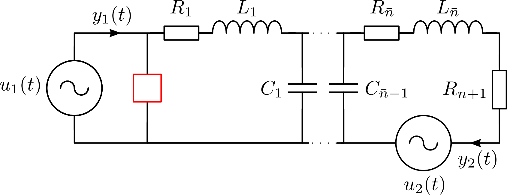

RCL Ladder Network
Description
This benchmark creates linear, time-invariant pH-DAE models for simple electric circuits consisting of ideal voltage sources, resistors, inductors and capacitors. The modelling of such circuits is descibed in Freund2011.

Modeling of such electric circuits with directed graphs leads to systems of the following form:
\[\begin{aligned} E \dot{x}(t) &= (J-R)x(t) + Gu(t), \\ y(t) &= G^\mathsf{T} x(t), \end{aligned}\]
where
\[\begin{equation*} E = \begin{bmatrix} \mathcal{A}_c C \mathcal{A}_c^\mathsf{T} & 0 & 0 \\ 0 & L & 0 \\ 0 & 0 & 0 \end{bmatrix}, \, J = \begin{bmatrix} 0 & -\mathcal{A}_l & -\mathcal{A}_v \\ \mathcal{A}_l^\mathsf{T} & 0 & 0 \\ \mathcal{A}_v^\mathsf{T} & 0 & 0 \end{bmatrix},\, R = \begin{bmatrix} \mathcal{A}_r R^{-1}\mathcal{A}_r^{\mathsf{T}} & 0 & 0 \\ 0 & 0 & 0 \\ 0 & 0 & 0 \end{bmatrix},\, G = \begin{bmatrix} 0 \\ 0 \\ -I_m \end{bmatrix}. \end{equation*}\]
Here, the matrices $R,\,L,\,C$ are positive definite diagonal matrices that contain the resistances, inductances and capacitances, respectively, as entries. The incidence matrices $\mathcal{A}_r,\,\mathcal{A}_l,\,\mathcal{A}_c,\,\mathcal{A}_v$ follow directly from the directed graph of the network and contain only entries in $\{-1,0,1\}$. The inputs $u(t)$ of the system are the voltages $v_v(t)$ provided by the voltage sources and the outputs are the negative currents $i_v(t)$ through the voltage sources. The state vector is given by $x(t) := \begin{bmatrix} v(t)^\mathsf{T} & i_l(t)^\mathsf{T} & i_v(t)^\mathsf{T} \end{bmatrix}^\mathsf{T}$ with node voltages $v(t)$ and inductor currents $i_l(t)$. Consequently, the dimension of the model is given by $n = 3\widetilde{n} + 2m$, where $\widetilde{n}$ denotes the number of loops in the system and $m$ is the number of voltage sources. Since $\mathcal{A}_c C \mathcal{A}_c^\mathsf{T}$ is diagonal for the circuit in Figure 1, a transformation of the model to semi-explicit form is straightforward. The benchmark allows for different configurations of the network that will change the index of the resulting pH-DAE model and its number of inputs and outputs.
- SISO/MIMO: In the multiple-input multiple-output (MIMO) version, the inputs are the voltages of both voltage sources and the outputs are the currents as shown in Figure 1. In the single-input single-output (SISO) configuration, we replace the second voltage source by a wire and only consider the input-to-output behaviour from $u_1(\cdot)$ to $y_1(\cdot)$.
- Index 1/Index 2: The differentiation index of the system depends on the electrical component that is placed at the position of the red box in Figure 1. A resistor leads to pH-DAEs with index 1 and a capacitor is used in the index 2 case which leads to improper transfer functions.
Parameters
The topology of the network and its characteristics may be changed via
- The values for the resistances $r$, capacitances $c$ and inductances $l$. If scalars are provided, the value will be applied to all components of the respective type. Parameters can be supplied to each component separately by providing vectors of suitable length.
- The number $\widetilde{n}$ of loops in the network.
- The number of inputs (voltage sources) $m$.
Interface
To obtain system matrices $E, J, R$ and $G$ use the following function call.
using PortHamiltonianBenchmarkSystems
E, J, R, G = setup_DAE1_RCL_LadderNetwork_sparse() # for standard parametersTo specify optional arguments, specify the parameters as named arguments.
using PortHamiltonianBenchmarkSystems
E, J, R, G = setup_DAE1_RCL_LadderNetwork_sparse(ns = 500, r = rand(502))The transfer function can be defined as follows.
using LinearAlgebra, PortHamiltonianBenchmarkSystems
E, J, R, G = setup_DAE1_RCL_LadderNetwork_sparse()
H(s) = G'*((s*E-(J-R))\G)PortHamiltonianBenchmarkSystems.setup_DAE1_RCL_LadderNetwork_sparse — MethodDescription: This demo provides a semi-explicit index-1 port-Hamiltonian DAE system derived from a simple RCL ladder network with shunt resistor
Input Arguments:
- ns: Number of loops in network
- r, c, l: Resistances, capacitances and inductances vectors with length ns+2 / ns-1 / ns
- m: Number of inputs (1: SISO or 2: MIMO)
Output Arguments:
- E, J, R, G: Index-1 PH-DAE model of the RCL ladder network
References: R. W. Freund. Structure-Preserving Model Order Reduction of RCL Circuit Equations, 2008.
Author: Tim Moser E-Mail: tim.moser@tum.de Date: 2021/11/03
PortHamiltonianBenchmarkSystems.setup_DAE2_RCL_LadderNetwork_sparse — MethodIndex 2 RCL Ladder Network
Description: This demo provides a semi-explicit index-2 port-Hamiltonian DAE system derived from a simple RCL ladder network with buffer capacitor
Input Arguments:
- ns: Number of loops in network
- r, c, l: Resistances, capacitances and inductances vectors with length ns+1 / ns / ns
- m: Number of inputs (1: SISO or 2: MIMO)
Output Arguments:
- E, J, R, G: Index-2 PH-DAE model of the RCL ladder network
References: R. W. Freund. Structure-Preserving Model Order Reduction of RCL Circuit Equations, 2008.
Author: Tim Moser E-Mail: tim.moser@tum.de Date: 2021/12/14
References
@InCollection{Freund2011,
author = {Roland W. Freund},
title = {The {SPRIM} Algorithm for Structure-Preserving Order Reduction of General {RCL} Circuits},
booktitle = {Model Reduction for Circuit Simulation},
series = {Lect. Notes Electr. Eng.},
year = {2011},
publisher = {Springer, Dordrecht},
volume = {74},
chapter = {2},
editor = {P. Benner and M. Hinze and E.~J.~W. ter Maten},
pages = {25--52},
}